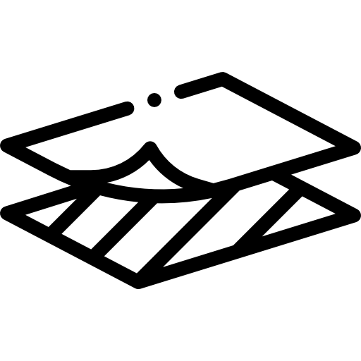

Make a Shopper
Make this bag for yourself.
Get started!A multi-purpose bag that you can use anywhere!
Materials and Equipment
- Fabric in cotton 1 meter(m) by 1.5m.
- Matching thread. The thread used here is Gutermann Sew All 416.
-  Fusible interfacing of 2 x 10 centimeter(cm) by 65cm for straps (optional).
-
 Measuring tape or cutting mat.
Measuring tape or cutting mat.
- Scissors suitable for cutting fabric.
- Iron.
- Sewing machine. A domestic home sewing machine is perfect for this project.
- Sewing pins.
Steps
Step 1. Prepare the fabric.
Prepare the fabric for main body of the bag. With the right side out fold the fabric in half. Cut 51cm by 54.5cm of fabric with the sorter measurement being on the fold. Cut 2 x 10cm by 65cm for the bag handles (see image below).
Step 2. Sew the seams.
right side out, sew each side of the bag together leaving a 1cm seam allowance. Trim .5cm from this raw edge. Turn the bag wrong side out and sew over the raw edge by 1cm to make a french seam. Repeat the process for the bag bottom corners. First, with the right side out, sew the bottom corners, then turn the bag wrong side out and sew the raw seams to make a french seam. Iron the french seams flat.
Step 3. Prepare the handles.
Apply the interfacing to the bag handle fabric (optional). Wrong sides together sew the edges of the fabric together leaving a 1cm seam allowance. Turn the handle right side out and iron flat.
Step 4. Attach the handles to the bag.
With the bag wrong side out, fold down the top of the bag 4.5cm and again 5cm and iron flat. Exactly 14cm from the finished outside edge, pin the the bag handles to the top facing leaving 1cm of the bag handle underneath the top facing.
Step 5. Sew the top of the bag.
Turn the bag right side out and pull the handles through. Sew the top facing 4cm and again 1cm from the top.